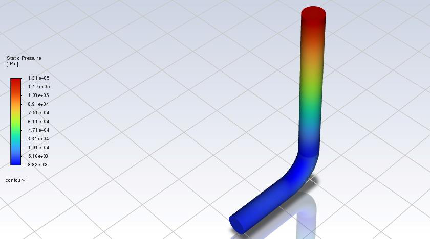
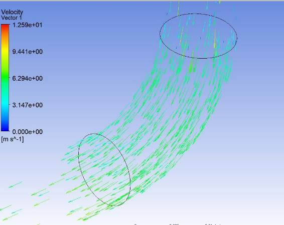
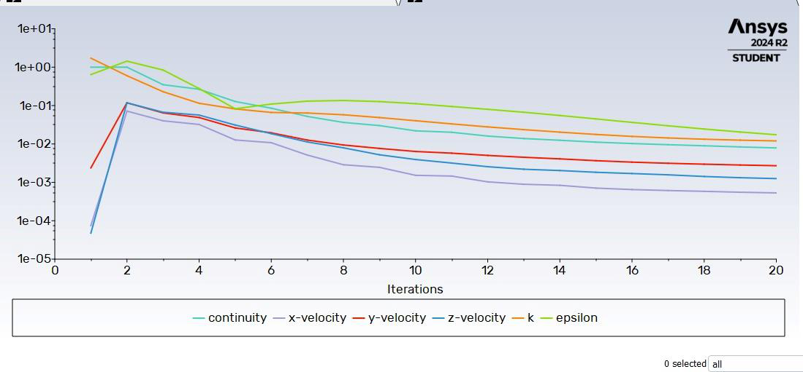
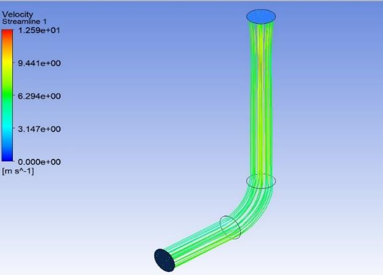

Objective
Investigate changes in the internal flow field as fluid passes through a curved pipe, emphasizing the effects of curvature on velocity redistribution and pressure variation.
Geometry and mesh
The supplied report specifies 10 mm diameter, 15 mm bend radius, 80 mm height and 32 mm length. It reports a structured 3D mesh containing 109,213 cells and 36,954 nodes with wall-focused refinement.
Simulation visualizations






Reported observations
The report describes a nonuniform flow field around the bend, changes in pressure and velocity contours, and secondary-flow behavior. The CFD residual plot is shown as a convergence diagnostic. Detailed numerical pressure-loss claims are omitted here pending reconciliation of the values and calculations in the submitted report.
Team project. Geometry and mesh numbers are quoted from the submitted report and have not been independently re-simulated.